StudIA - ZAINO · guida completa
Studiare con il tuo zaino
Uno zaino di scuola tiene insieme i tuoi materiali: i libri, i fogli, le foto della lavagna, le registrazioni. StudIA - ZAINO fa la stessa cosa sul computer. Apri lo zaino e studi: leggi un documento, scrivi appunti, disegni una mappa. Quando ti blocchi, fai una domanda al tutor AI.
Uno zaino è una cartella con i tuoi materiali. Dentro puoi mettere documenti PDF, testi, immagini, video e audio. Nell'app scrivi appunti e disegni mappe. Il tutor AI legge i materiali dello zaino aperto e risponde alle tue domande. Tutto sta in una finestra sola: mentre studi non cambi programma.

I tasti sono scritti come su un Mac. Su Windows premi Ctrl dove leggi ⌘. Premi Alt dove leggi ⌥. Premi Maiusc dove leggi ⇧. Esempio: ⌘S su Windows è Ctrl+S. La tabella completa è nel capitolo Tasti rapidi. Anche l'app scrive i tasti nella lingua del tuo computer.
Le parole fra «virgolette» sono quelle che leggi sullo schermo.
Ogni immagine si ingrandisce con un click. Esc la chiude. Le frecce ← e → passano da un'immagine all'altra. Il pallino giallo e i numeri cerchiati indicano il comando di cui parla il testo.
Creare il primo zaino
Al primo avvio l'app ti chiede una cartella. In quella cartella StudIA tiene tutti i tuoi zaini. La scegli una volta sola.
Poi crei il primo zaino. Uno zaino tiene i materiali di una materia. Il nome dello zaino è di solito il nome della materia.
I passi, uno alla volta
- Guarda la barra in alto. Trovi la tendina «ZAINO ▾» e il pulsante «+».
- Premi «+». Si apre un pannello con un campo: «Nome della materia». Nel campo c'è un esempio: «es. Diritto pubblico».
- Scrivi il nome. In questa guida scriviamo Sistema solare.
- Premi «Crea», oppure premi Invio.
- In basso compare l'avviso «Zaino creato: Sistema solare». Lo zaino è vuoto ed è pronto.


Ogni zaino ricorda i suoi materiali aperti, la pagina di ogni documento e la forma del banco. I documenti, gli appunti, le mappe e le conversazioni di uno zaino non si mescolano con quelli di un altro zaino.
Il nome dello zaino
- Il nome che scrivi è il titolo dello zaino. Lo leggi nella tendina «ZAINO ▾».
- Dal titolo l'app ricava il nome della cartella. Il nome della cartella è tutto minuscolo e senza accenti. «Sistema solare» diventa
sistema-solare. «Città & Società» diventacitta-societa. - Il nome deve essere libero. Se il nome è già usato, il pannello lo scrive in rosso e lo zaino non nasce.
- Se lasci il campo vuoto, il pannello dice «Dai un nome alla materia.»
- Puoi cambiare il titolo più tardi. Vedi il capitolo Rinominare ed eliminare uno zaino.
Più zaini, e come si cambia zaino
Puoi creare quanti zaini vuoi. Di solito se ne crea uno per materia. La tendina «ZAINO ▾» elenca tutti gli zaini. Accanto a ogni nome c'è quanti documenti contiene. Scegli uno zaino e l'app lo apre. In basso compare l'avviso «Zaino: Storia romana».

Ogni zaino è una cartella dentro la cartella che hai scelto al primo avvio. Sono file normali e sono tuoi. Puoi aprirli con il Finder, con Esplora file o con un altro programma.
StudIA - file/
Zaini/
sistema-solare/
_zaino.md il titolo e la data
MATERIALI/PDF/ i documenti
MATERIALI/Indici-PDF/ il testo di ogni pagina, serve alla ricerca
CHAT/ le conversazioni con il tutor
APPUNTI/ i tuoi appunti e le tue evidenze
MAPPE/ le tue mappe
ALBUM/ i ritagli e le immagini
Il tutor AI: la chat dentro l'app
Premi «Chat AI» nella barra in alto. Si apre una finestra di chat. Puoi spostarla e cambiarne la misura. Puoi tenerla accanto al documento mentre studi.
⚠️ Prima di scrivere la prima domanda devi scegliere un fornitore AI e un modello. Vedi il capitolo Impostazioni.
I tre modi di lavorare
- Socratico: ti fa una domanda alla volta e ti dà piccoli indizi.
- Spiegamelo: spiega il concetto. Quando serve aggiunge brani di Wikipedia e i loro collegamenti.
- Chiedimelo: ti fa esercitare. Aspetta la tua risposta e poi ti dice come è andata.
Il modo si sceglie nella testata della chat, in alto a sinistra.
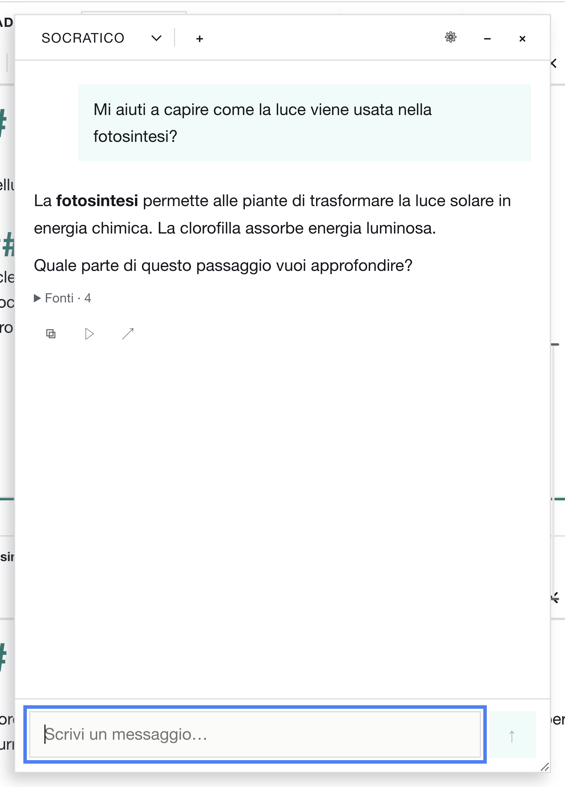
- L'ingranaggio apre le impostazioni AI.
- «+» comincia una conversazione nuova.
- «−» riduce la finestra. La conversazione resta aperta.
- «×» chiude la finestra.
- Invio invia il messaggio. Maiusc+Invio va a capo.
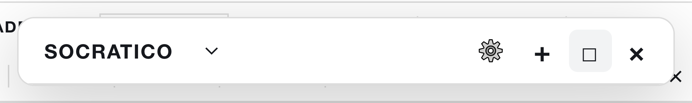
Copiare, ascoltare, ripartire da una risposta
Sotto ogni risposta ci sono tre pulsanti.
- Copia risposta copia il testo.
- Leggi la risposta legge il testo ad alta voce. Il pulsante diventa un quadrato: premilo per fermare la lettura.
- Nuova conversazione da qui crea una conversazione nuova. La conversazione nuova contiene i messaggi fino a quel punto. La conversazione di prima non cambia.
Riprendere e nominare una conversazione
Quando apri la chat vedi l'elenco delle conversazioni dello zaino. Clicca un titolo per riprendere quella conversazione. Oppure scrivi subito una domanda: comincia una conversazione nuova.
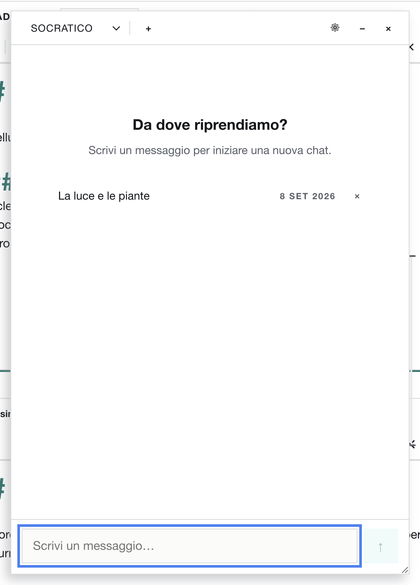
L'app salva le conversazioni da sola. Quando chiudi con «×» o premi «+», l'app ti chiede un nome. Per una conversazione nuova propone la data e l'ora. Puoi tenere la data. Esc tiene il nome di prima. Il piccolo «×» accanto a una conversazione la elimina, dopo una conferma.
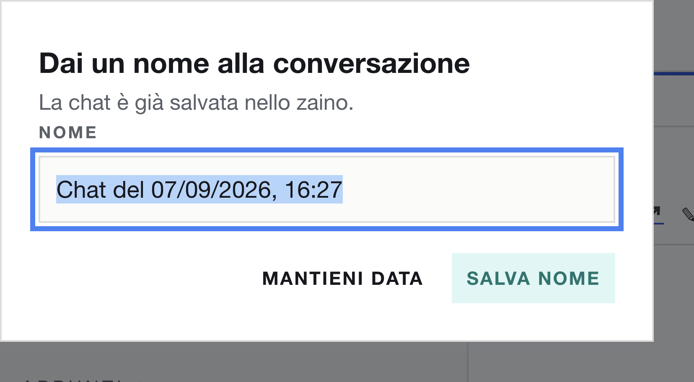
CHAT dello zaino.Che cosa legge il tutor
A ogni domanda l'app salva gli appunti aperti. Poi rilegge i documenti, i testi e gli appunti dello zaino aperto.
Il tutor riceve la tua domanda, una parte della conversazione, il tuo profilo e i passaggi che c'entrano con la domanda. Non riceve tutto lo zaino. Premi «Fonti» sotto la risposta: vedi da quali file e da quali pagine vengono i passaggi.
Il tutor non esegue comandi e non modifica i tuoi file. Però può dire cose sbagliate. Controlla la spiegazione sul documento, soprattutto quando il tutor non cita nessuna fonte.
Un documento fatto di fotografie non si legge. Prima devi riconoscere il testo: vedi il capitolo I documenti PDF. L'app non trascrive i video e gli audio.
Impostazioni: il tuo profilo e la chiave AI
Il tuo modo di imparare
Apri «⚙ Impostazioni» e scegli la scheda «Utente». Qui descrivi come vuoi che il tutor ti parli: la lingua, la lunghezza delle risposte, gli esempi, le verifiche, quanto già sai dell'argomento.
Nel campo delle preferenze libere puoi chiedere altre cose. Per esempio: «spiega sempre le parole nuove». Descrivi che cosa ti aiuta. Non devi scrivere nessuna diagnosi.
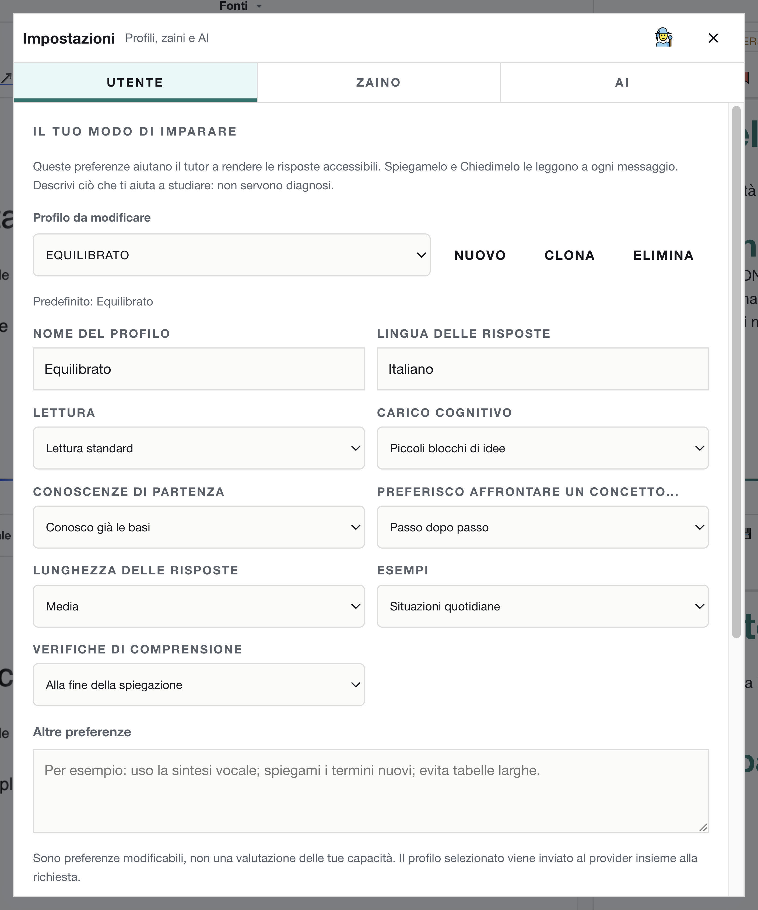
Premi «Salva profilo». Premi «Usa come predefinito» per scegliere il profilo che la chat applica. Ci sono tre profili pronti: Equilibrato, Explain like I'm 5 e Mr Feynman. Se li usi, l'app ne fa una copia che puoi cambiare.
I profili valgono per tutti gli zaini della stessa cartella.
La chiave API e il modello
Il tutor funziona con la chiave di un fornitore AI. La chiave è tua. Il fornitore decide i costi.
- Apri «⚙ Impostazioni» e scegli la scheda «AI».
- Scegli il fornitore: Anthropic, Gemini, OpenAI, Qwen, Kimi o DeepSeek.
- Premi «Crea una API key». Si apre la pagina del fornitore.
- Copia la chiave dal sito del fornitore. Incollala nel campo. Premi «Salva chiave».
- Scegli il modello nell'elenco. L'elenco arriva dal fornitore e dipende dal tuo account.
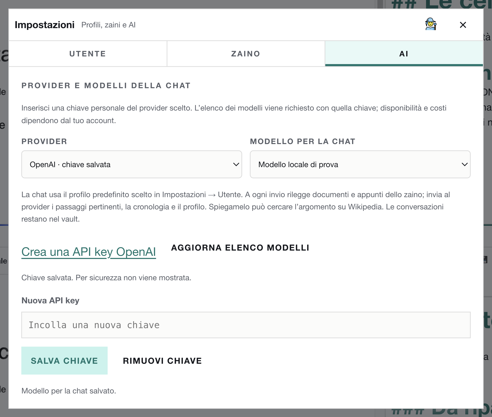
L'app tiene la chiave nell'archivio sicuro del computer. La chiave non entra nella cartella dello zaino e non entra nelle conversazioni. Puoi toglierla dalle stesse impostazioni.
Come faccio a…
Gli altri capitoli spiegano un pezzo dell'app alla volta. Questo capitolo parte da una cosa che vuoi fare. Ogni passo rimanda al capitolo che lo spiega per esteso.
Come faccio a scrivere appunti?
Gli appunti si scrivono nello strumento Appunti. Un appunto è un file di testo. Puoi riempirlo in due modi: scrivi tu, oppure porti dentro pezzi del documento. Un pezzo portato dentro arriva con il rimando alla pagina da cui viene.
- Apri gli appunti. Nella testata di un blocco scegli Appunti dalla tendina. Oppure clicca un appunto nella sidebar: l'app gli trova un blocco. → I blocchi
- Crea l'appunto. Premi «+» nella barra degli appunti. Scrivi il titolo. Scegli il documento a cui appartiene. Premi Invio. → Un appunto nuovo
- Scrivi. La barra ha il grassetto, il corsivo, i titoli, gli elenchi, i riquadri colorati e le emoji. Il pulsante «?» mostra tutte le notazioni. → La barra degli appunti
- Porta dentro una frase del documento. Seleziona la frase nel documento. Premi «Appunta» nella barra della selezione. → «Appunta»
- Cita il punto. Il pulsante 🔖 scrive nell'appunto la pagina del documento aperto, oppure il minuto del video. → Importare
- Aggiungi parole chiave, ritagli e immagini. Trascina un chip delle Parole chiave dentro l'appunto. Trascina una scheda dei Ritagli o dell'Album Foto. → Importare
- Rileggi. Il pulsante ▣ (⌘J) mostra l'appunto come si legge. Il pulsante ◫ (F9) mette il testo e la lettura uno accanto all'altro. → Scrivere nell'anteprima
- Non salvare. L'appunto si salva da solo. → Il salvataggio
- Ritrova un appunto. La tendina «QUADERNO ▾» elenca gli appunti. La lente in alto cerca anche dentro gli appunti. → La lente
| Strumento | Dove sta | Che cosa ci fai |
|---|---|---|
| Appunti | un blocco del banco | scrivi, crei un appunto, lo rinomini, lo stampi, lo salvi in PDF |
| Fonti | un altro blocco | selezioni il testo del documento e premi «Appunta» o «Keyword» |
| Player | un blocco | ⌘⇧C scrive il minuto del video negli appunti |
| Parole chiave | un blocco | trascini un chip nell'appunto |
| Ritagli e Album Foto | un blocco | trascini una scheda nell'appunto |
Sul disco: ogni appunto è un file di testo in Zaini/<zaino>/APPUNTI/Titolo.md. Puoi aprirlo con qualunque programma. → La cartella dello zaino
Come faccio a disegnare una mappa?
Le mappe si disegnano nello strumento Mappa. Una mappa è fatta di nodi e di legami. Ogni legame porta scritta una parola. Alcuni nodi puoi farli arrivare dal documento: una parola chiave, un ritaglio, una frase selezionata.
- Apri la mappa. Nella testata di un blocco scegli Mappa. → La barra della mappa
- Crea la mappa. Premi «+». Scrivi il titolo. Conferma. La mappa nasce con un nodo solo: il titolo. → Una mappa nuova
- Aggiungi i nodi. Seleziona un nodo. Tab aggiunge un nodo figlio. Invio aggiunge un nodo accanto. Scrivi il testo e premi Invio.
- Collega due nodi. Trascina dal cerchietto sul bordo del nodo fino all'altro nodo. Poi scrivi la parola del legame.
- Porta dentro il documento. Trascina un chip delle Parole chiave sulla mappa. Oppure scegli «Metti nella mappa» su una scheda dei Ritagli. → Importare
- Sistema la mappa. Trascina i nodi dove vuoi. I pulsanti «TD» e «SX» cambiano la direzione. Il pulsante ⤢ adatta la mappa al blocco.
- Torna al documento. Un nodo nato da una parola chiave ha un pallino nell'angolo. Premi il pallino: si apre il documento alla pagina giusta.
- Non salvare. La mappa si salva da sola.
Sul disco: ogni mappa è un file in Zaini/<zaino>/MAPPE/Titolo.json. → La cartella dello zaino
Scegli la forma «Quattro blocchi» dal pulsante «◫ BANCO». Metti il documento in un blocco, gli appunti in un altro, la mappa nel terzo e le Parole chiave nel quarto. → Le forme del banco
La finestra: barra, sidebar, banco e blocchi
La finestra ha tre parti.
- In alto la barra, con i comandi dell'app.
- A sinistra la sidebar, con l'elenco di quello che c'è nello zaino.
- Al centro il banco. Il banco si divide in blocchi. In ogni blocco metti uno strumento.
La barra in alto

- «ZAINO ▾» — dice quale zaino è aperto. Serve anche a cambiare zaino.
- «+» — crea uno zaino nuovo.
- 🔍 — la lente. Cerca in tutto lo zaino. Anche ⌘F.
- «◫ BANCO» — sceglie in quanti blocchi dividere il banco.
- «CHAT AI» — apre il tutor.
- ⚙ — le impostazioni. La scheda «Zaino» rinomina ed elimina gli zaini, e apre questa guida.
- ☀️ / 🌙 — tema chiaro o tema scuro.
- «A−» — testo più piccolo.
- «A+» — testo più grande.
Chiudi l'app con il tema scuro e il testo grande. Alla riapertura li ritrovi. Sono preferenze di questo computer: uno zaino copiato su un altro computer non se le porta dietro.
La sidebar: le tre sezioni
La sidebar elenca quello che c'è nello zaino. Ha sempre tre sezioni, in quest'ordine: FONTI, APPUNTI e MAPPE. Nella sezione FONTI stanno i documenti, i video e gli audio. Accanto al titolo di ogni sezione c'è il numero delle voci. La voce aperta adesso ha il bordo colorato a sinistra.


- Clicca un documento: si apre nello strumento Fonti, alla pagina dove eri rimasto.
- Clicca un video o un audio: si apre nel Player, al minuto dove eri rimasto.
- Clicca un appunto: si apre nello strumento Appunti. Clicca una mappa: si apre nello strumento Mappa.
- Se lo strumento non è a schermo, l'app lo mette in un blocco vuoto. Se non c'è un blocco vuoto, aggiunge un blocco.
- Sulle voci della sidebar il tasto destro non fa niente. Per togliere un documento usa il cestino nella barra del documento. Vedi il capitolo Eliminare.

Il banco: le forme
Premi «◫ BANCO». Si apre il pannello «Disposizione dei blocchi». Ci sono dodici forme pronte e una casella per disegnare la tua forma. La forma in uso ha il bordo verde-acqua.

- Un blocco solo
- Due · affiancati. È la forma con cui nasce uno zaino.
- Due · impilati
- Tre · colonna sinistra intera
- Tre · colonna destra intera
- Tre · riga sopra intera
- Tre · riga sotto intera
- Quattro blocchi
- Tre · colonne affiancate
- Tre colonne · la terza divisa
- Tre colonne · la prima divisa
- Sei blocchi
- Disegna la tua forma. Trascini sui riquadri di una griglia 3×3. Il tasto destro su una forma tua la elimina.

I blocchi: che cosa metti dentro
Ogni blocco ha una testata con una tendina. La tendina dice quale strumento c'è nel blocco. Serve anche a cambiarlo. Gli strumenti sono otto.

- Uno strumento sta in un blocco solo. Scegli «Mappa» in un blocco dove c'era «Appunti». Se la mappa stava in un altro blocco, i due blocchi si scambiano lo strumento.
- Per svuotare un blocco chiudi la mappa con la sua «×». Il blocco resta vuoto e dice «Scegli uno strumento qui sopra.»
- La «×» delle Fonti e del Player chiude il documento o il video. Il blocco resta, pronto per un altro materiale.
- Se scegli una forma con meno blocchi, gli strumenti che escono aspettano. Un avviso lo dice: «Fuori dal banco: Ritagli · Mappa — tornano cambiando forma».
- La riga colorata in cima al blocco dice la famiglia dello strumento. Blu: i materiali da leggere e da guardare. Verde-acqua: le cose che scrivi tu.


Due documenti o due appunti insieme
Puoi aprire due documenti insieme, oppure due appunti insieme. Scegli Fonti (o Appunti) nella testata di due blocchi diversi. Poi scegli il file dalla tendina di ciascun blocco. Ogni blocco tiene il suo file e la sua pagina.
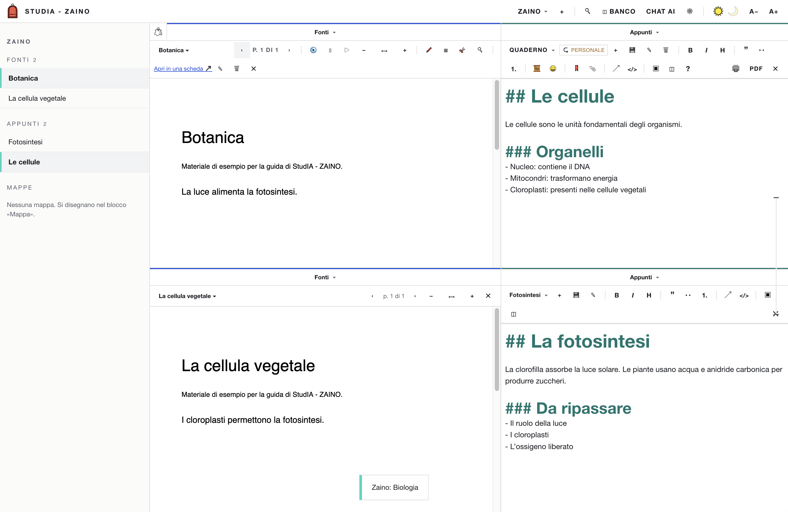
Il secondo appunto ha il suo salvataggio, il suo pulsante «+» e la sua anteprima. ⚠️ Lo stesso appunto non si può aprire nei due blocchi insieme: le due copie si sovrascriverebbero.
Un blocco a tutto schermo
Fai un doppio click sulla testata del blocco, nello spazio accanto alla tendina. Il banco passa a un blocco solo. Un avviso dice «A tutto banco — doppio click sulla testata per tornare». Un altro doppio click rimette il banco com'era.


Ogni zaino ricorda la sua forma del banco, gli strumenti nei blocchi e la misura dei divisori. Questa memoria sta nel computer che stai usando. La pagina di ogni documento invece sta nella cartella dello zaino, e viaggia con lui.
La lente: cercare in tutto lo zaino
Premi la lente nella barra in alto. Puoi anche premere ⌘F quando non stai leggendo un documento. La lente cerca in quattro posti:
- in tutte le pagine di tutti i documenti dello zaino;
- in tutti i tuoi appunti;
- nei nodi di tutte le tue mappe, anche di quelle chiuse;
- nelle didascalie dei ritagli e delle immagini.
Clicca un risultato e l'app ti porta lì. Su una pagina apre il documento e accende la parola. Su un appunto lo apre alla riga giusta. Su un nodo apre la mappa e mette a fuoco quel nodo.
⚠️ Se stai leggendo un documento, ⌘F apre invece la ricerca dentro quel documento.
Se scrivi due parole, la lente cerca tutte e due le parole, anche lontane fra loro. sistema solare trova una pagina che dice «sistema nervoso» in cima e «anno solare» in fondo.
Metti le parole fra virgolette e la lente cerca quella frase: "sistema solare". Vale anche per una parola sola: per si trova dentro «perché», "per" no.
I risultati sono in gruppi. L'ordine è sempre questo: prima gli appunti, poi i nodi delle mappe, poi le didascalie, alla fine i documenti. Un appunto scritto un minuto fa si trova subito.


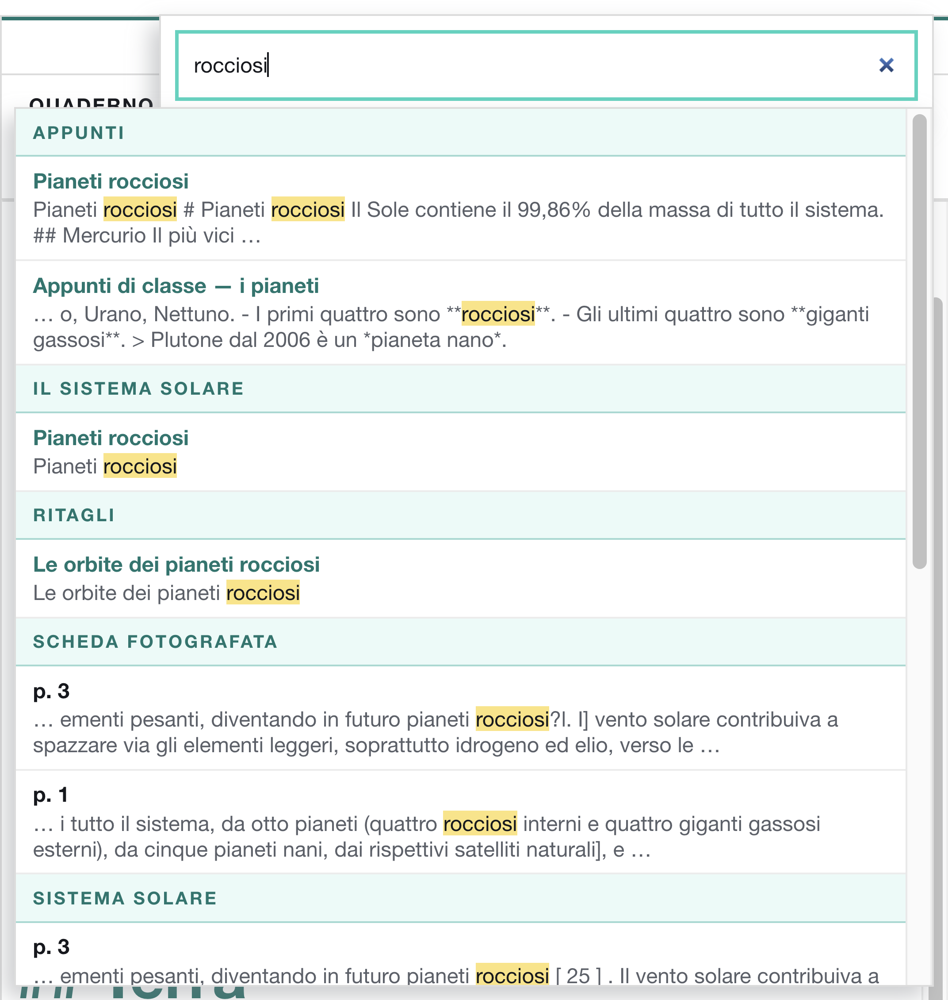

Tema scuro e testo grande

Gli strumenti dei blocchi
Gli strumenti sono otto. Qui li apriamo uno per uno e guardiamo la loro barra dei comandi.
Tutte le barre seguono lo stesso ordine. Prima c'è il nome di quello che stai guardando. Poi i comandi che ci lavorano. In fondo a destra i comandi che si premono per ultimi: stampa e chiudi.
Fonti: il documento

- «Documenti ▾» — dice quale documento è aperto. Premilo per aprirne un altro. Accanto a ogni titolo c'è la pagina dove eri rimasto.
- ‹ — pagina precedente.
- «p. 1 di 24» — dice a che pagina sei. Premilo e diventa un campo. Scrivi il numero e premi Invio: l'app va a quella pagina. Esc chiude il campo.
- › — pagina successiva.
- ◉ — il colore del foglio. Vedi qui sotto.
- ▯ — la finestra sulla riga. Vedi qui sotto.
- ▶ — legge la pagina ad alta voce. ⚠️ Questo comando c'è solo sul Mac.
- − — riduce la pagina.
- ⟷ / ⤢ / 74% — lo zoom. Vedi qui sotto.
- + — ingrandisce la pagina.
- 🖉 — nasconde le evidenze sul testo. Le evidenze restano salvate. Premi di nuovo e tornano.
- ☰ — le letture. Sullo stesso documento puoi tenere gruppi di evidenze separati e accenderne uno per volta.
- ✂ — le forbici. Ritagliano un pezzo della pagina.
- 🔍 — cerca dentro questo documento (⌘F).
- «Apri in una scheda ↗» — apre il documento in una finestra a parte.
- 🗑 — toglie il documento dallo zaino. Vedi il capitolo Eliminare.
- ✕ — chiude il documento. ⚠️ Esc non chiude il documento.
Tre comandi per leggere con meno fatica
Sono il comando 5, il 6 e il 7. Stanno fra le frecce e lo zoom.
- ◉ Il colore del foglio. La pagina bianca diventa crema, azzurra o grigia. Ogni volta che premi il pulsante passi al colore dopo. Il testo resta nero: si colora il foglio. L'app ricorda la tua scelta per tutti i documenti.
- ▯ La finestra sulla riga. Una fascia chiara illumina una riga e lascia il resto in ombra. La fascia segue il mouse. I tasti ↑ e ↓ la spostano di una riga. Esc la spegne. Con la fascia accesa puoi ancora selezionare il testo.
- ▶ La voce. Legge ad alta voce la pagina che stai guardando e accende la frase che sta leggendo. Si ferma alla fine della pagina. ⚠️ Questo comando c'è solo sul Mac, perché usa la voce del sistema.
⚠️ Su un documento fatto di fotografie compare un comando in più: «Aa↗». Vedi il capitolo I documenti PDF.


Lo zoom ha tre stati
Il pulsante fra «−» e «+» non è un numero fisso. È un interruttore.
- ⟷ adatta la pagina alla larghezza del blocco. Se allarghi il blocco, la pagina si allarga.
- ⤢ mostra la pagina intera.
- 74% è lo zoom che hai scelto a mano con «+», «−» o con ⇧+rotella. Premi il numero per tornare ad adattare.


La barra della selezione
Trascina il mouse sul testo del documento. Il testo si seleziona. Compare una barra con tutto quello che puoi fare con quel testo. La stessa barra si apre con il tasto destro dentro la selezione.

- «Appunta» — copia il testo nell'appunto aperto, con il rimando alla pagina.
- Gli otto stili — scegli come arriva il testo nell'appunto: senza riquadro (¶), oppure dentro uno dei sette riquadri colorati (Nota, Importante, Definizione, Esempio, Dubbio, Attenzione, Da fare). Lo stile che scegli resta. Il pulsante 🔗, staccato, decide se il testo arriva con il rimando alla pagina.
- «Alla mappa» — crea un nodo di mappa con quel testo.
- «Keyword» — evidenzia il testo. Se il testo è corto, diventa anche una parola chiave.
- «Postilla…» — scrivi perché hai segnato quella frase. Vedi qui sotto.
- I colori — cinque colori, più un colore che scegli tu. Premi un colore e il testo si evidenzia.
- «Sottolinea» e «Evidenzia» — una riga sotto il testo, oppure il colore pieno sopra il testo.
- «Cancella evidenziatura» — toglie l'evidenza che sta sotto la selezione.
- «Copia» — copia il testo negli appunti del computer.

La postilla: perché hai segnato quella frase
Un'evidenza dice questa frase è importante. Non dice perché. Dopo due settimane la frase è ancora colorata e tu non ricordi più il motivo.
La postilla è il motivo, scritto da te. Seleziona la frase e scegli «Postilla…». Si apre un campo. Scrivi il motivo e premi Invio. ⚠️ Se la frase non era evidenziata, la postilla la evidenzia.
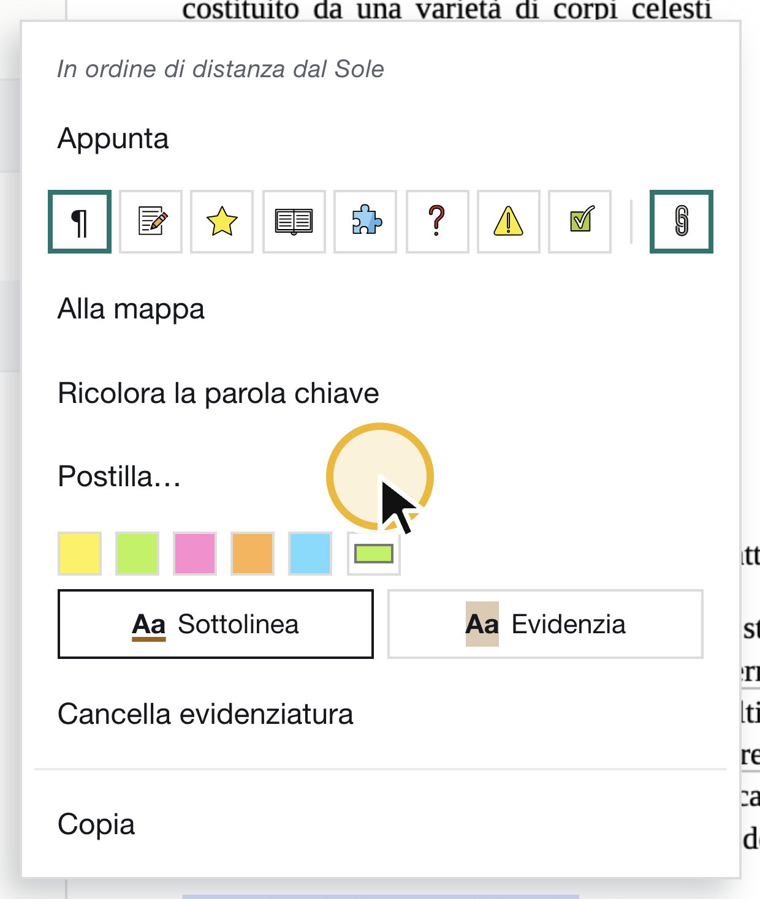
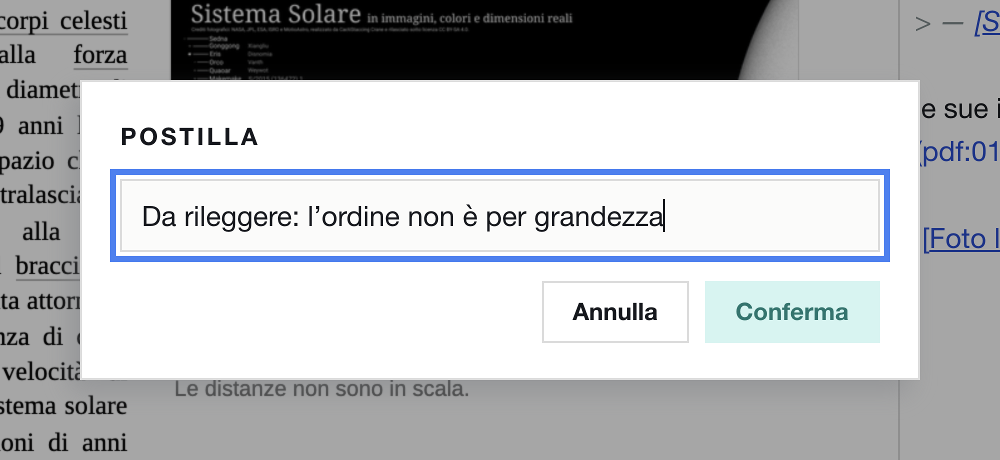
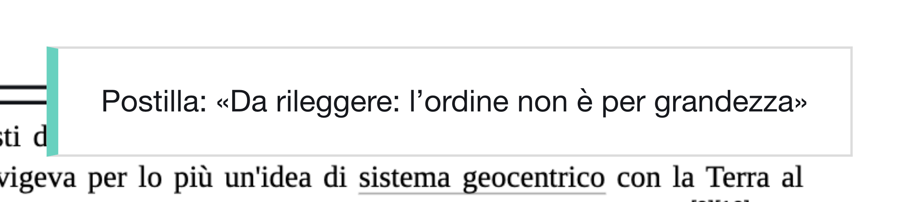
Seleziona di nuovo la stessa frase. Il menu mostra la postilla in corsivo. La voce adesso dice «Correggi la postilla…».
Per leggerle tutte insieme apri lo strumento Postille. Per togliere una postilla, aprila e cancella il testo.
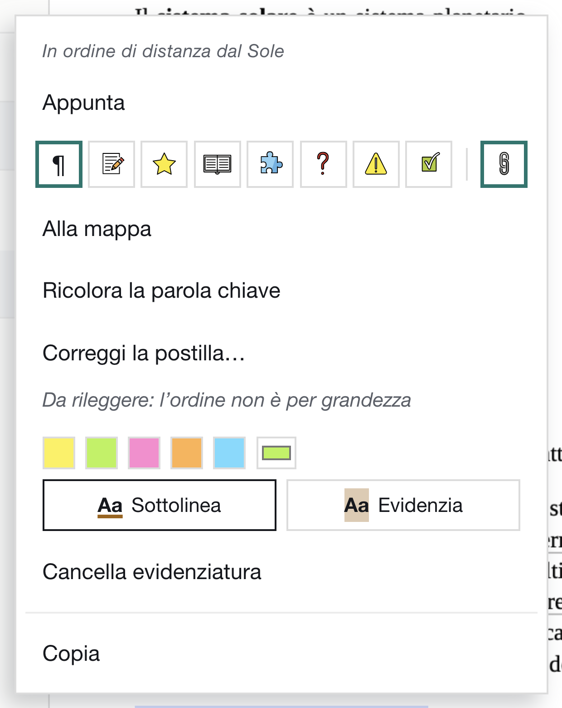
Fonti: due documenti insieme
Scegli Fonti nella testata di due blocchi. Poi scegli un documento nella tendina di ciascun blocco. Puoi aprire due documenti diversi. Puoi anche aprire lo stesso documento a due pagine diverse.
Il secondo blocco ha la sua pagina e il suo zoom. Nel secondo blocco puoi leggere e copiare. ⚠️ Le evidenze, la ricerca, i ritagli e «Appunta» funzionano solo nel primo blocco.

Player: video e audio
Il Player compare da solo quando porti nello zaino un video o un audio. Puoi anche sceglierlo dalla tendina di un blocco. Video e audio usano lo stesso strumento.

- «Media ▾» — dice quale video o audio è aperto. Premilo per cambiarlo. I video hanno «▶», gli audio hanno «♪». Accanto c'è il minuto dove eri rimasto.
- ‹‹ — indietro di 10 secondi (J).
- ▶ / ❚❚ — riproduci o metti in pausa (K oppure spazio).
- ›› — avanti di 10 secondi (L).
- «0:02 / 0:40» — dove sei e quanto dura.
- «1×» — la velocità: 0,75 · 1 · 1,25 · 1,5 · 1,75 · 2.
- ✂ — le forbici. Ritagliano un fermo immagine. Solo sui video.
- ✎ — scrive il minuto negli appunti (⌘⇧C). Il video va in pausa.
- 🗑 — toglie il video o l'audio dallo zaino.
- ✕ — chiude il Player.

» appena scritta](img/27-cita-minuto.png)
I tasti K, J, L e spazio funzionano solo quando non stai scrivendo. Se no la parola «job» scritta in un appunto farebbe saltare il video.
⌘⇧C funziona sempre, anche mentre scrivi. Serve a prendere appunti mentre guardi il video.
Appunti: dove scrivi

- «QUADERNO ▾» — dice quale appunto è aperto. Premilo per aprirne un altro.
- + — crea un appunto nuovo.
- 💾 — salva (⌘S). L'appunto si salva anche da solo.
- ✎ — rinomina l'appunto e cambia il documento a cui appartiene.
- 🗑 — elimina l'appunto.
- B — grassetto (⌘B).
- I — corsivo (⌘I).
- H — titolo (⌘H).
- ” — citazione.
- •• — elenco puntato (⌘L).
- 1. — elenco numerato.
- 📜 — inserisce un riquadro colorato: Nota, Importante, Definizione, Esempio, Dubbio, Attenzione, Da fare.
- 😀 — inserisce un'emoji. Le emoji si cercano in italiano.
- 🔖 — scrive il punto che stai guardando: la pagina del documento, oppure il minuto del video.
- 📎 — scrive un rimando a un altro materiale dello zaino. Scegli il materiale e la pagina.
- ↗ — inserisce un collegamento (⌘K).
- </> — codice.
- ▣ — mostra l'appunto come si legge (⌘J).
- ◫ — mette il testo e la lettura uno accanto all'altro (F9).
- ? — apre la tabella «Come si scrive in StudIA».
- 🖨 — stampa l'appunto (⌘P).
- PDF — salva l'appunto come PDF.
- ✕ — chiude l'appunto. L'app salva prima di chiudere.
Gli appunti si scrivono in Markdown. Il Markdown usa segni semplici: **grassetto**, - elenco, > citazione. Il pulsante «?» mostra tutti i segni con un esempio. Il capitolo Appunti e mappe spiega come si crea e si riempie un appunto.
Mappa: la mappa concettuale

- «MAPPE ▾» — dice quale mappa è aperta. Premilo per aprirne un'altra. Accanto a ogni titolo c'è il numero dei nodi.
- + — crea una mappa nuova. La mappa nasce con un nodo solo: il titolo.
- ✎ — rinomina la mappa e cambia il documento a cui appartiene.
- 🗑 — elimina la mappa.
- «1 2 3 4 5» — cinque memorie della disposizione. Premi un numero vuoto per salvare la posizione dei nodi di adesso. Premi un numero pieno per rimettere i nodi in quella posizione.
- «TD» e «SX» — la direzione della mappa: dall'alto verso il basso, oppure da sinistra verso destra.
- ⚙ — gli aggiustamenti della vista: distanze, misura del testo, larghezza dei nodi, stile delle linee.
- 🖨 — stampa la mappa (⌘P).
- PDF — salva la mappa come PDF, su un foglio orizzontale.
- ⤢ — adatta la mappa al blocco.
- ✕ — chiude la mappa. ⚠️ Esc non chiude la mappa: chiude quello che è aperto dentro la mappa.
La mappa non ha un pulsante «Salva»: si salva da sola dopo ogni modifica. Un pallino giallo nella barra dice che ci sono modifiche non ancora salvate. ⚠️ La mappa non si può esportare in PNG o in SVG. Puoi stamparla e salvarla in PDF.
Il modo in cui l'app dispone i nodi si chiama motore. I quattro motori sono Albero, DAG, Percorso e Anelli. Si cambiano con il tasto destro sullo spazio vuoto della mappa.
Parole chiave: le tue evidenze corte
Evidenzia un pezzo di testo corto, fino a tre parole piene. Gli articoli e le preposizioni non contano. Quel pezzo diventa una parola chiave: un chip del colore della sua evidenza.
Lo strumento Parole chiave raccoglie le parole chiave di tutti i documenti dello zaino. In alto c'è un campo per cercarle e un pulsante «Aa» per ordinarle.


Un chip si può trascinare. Nell'appunto lascia un collegamento alla pagina. Sulla mappa crea un nodo del suo colore, con il pallino che riapre il documento.
Postille: i tuoi motivi, tutti insieme
Le postille stanno attaccate alle loro frasi, sparse nei documenti. Questo strumento le raccoglie tutte in un elenco, raggruppate per documento. In alto dice quante sono.
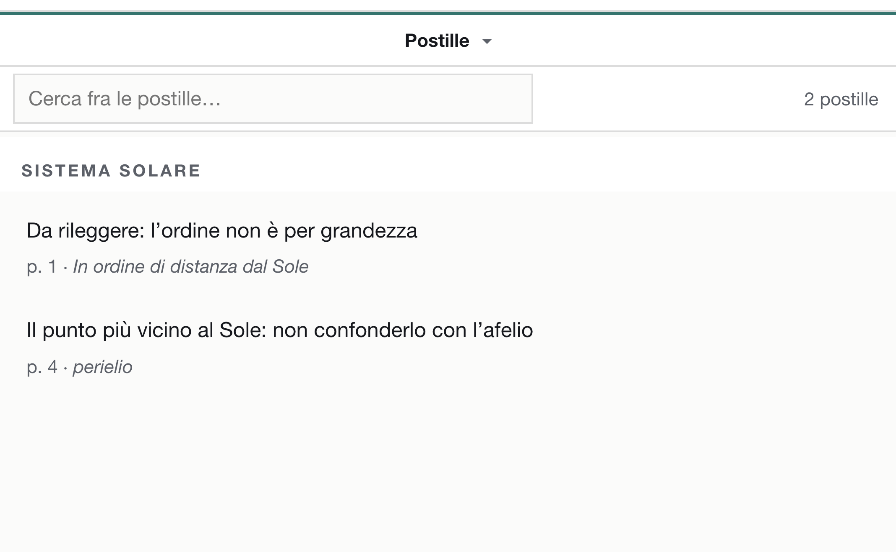
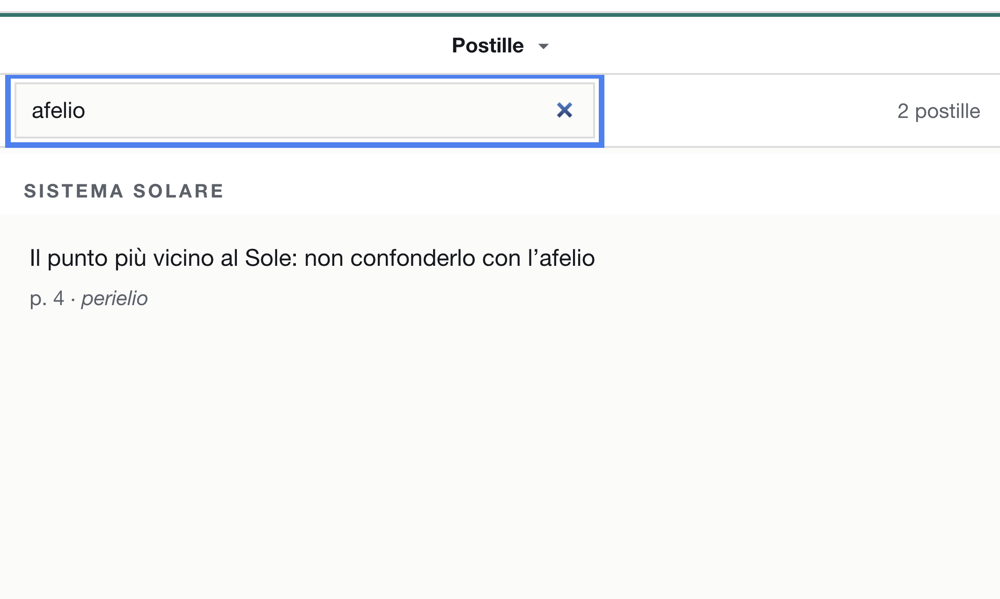
Il documento che hai aperto sta sempre in cima all'elenco.
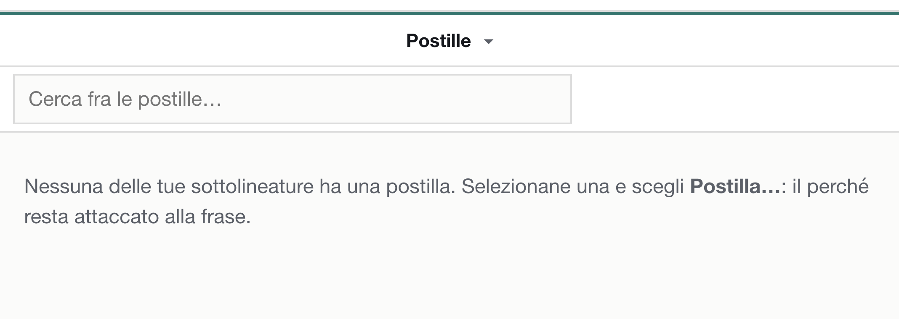
Ritagli: i pezzi che ritagli tu
Premi le forbici ✂ nella barra del documento. Puoi anche tenere premuto ⌘ e trascinare. Disegna un rettangolo sulla pagina. Quel pezzo diventa un'immagine nello strumento Ritagli.
Le forbici funzionano anche su un fermo immagine di un video e su una immagine dell'Album Foto.


Album Foto: le immagini che porti tu
Trascina un'immagine sulla finestra. L'immagine finisce nell'Album Foto. Per esempio la foto della lavagna, o una scheda fotografata con il telefono.
Ritagli e Album Foto mostrano lo stesso archivio con due filtri. Nei Ritagli ci sono i pezzi ritagliati da te. Nell'Album Foto ci sono le immagini intere che hai portato dentro.


Portare i materiali nello zaino
Per mettere un file nello zaino lo trascini sulla finestra dell'app. Prendi il file dal Finder, da Esplora file o dalla scrivania. Lo trascini sopra StudIA. Lo lasci andare.
⚠️ Non c'è un pulsante «Importa». Non c'è una finestra «Scegli file».

Che cosa entra, e dove finisce
| Se trascini… | Diventa… | Sul disco | Da sapere |
|---|---|---|---|
| un documento | MATERIALI/PDF/ | L'app ne fa una copia e la numera. Il primo documento si apre da solo. Non c'è un limite di dimensione. | |
| video .mp4 .mov .mkv .webm .avi .mpeg .mpg | un video nel Player | MATERIALI/Video/ | L'app ne fa una copia. ⚠️ L'app non trascrive i video. |
| audio .m4a .mp3 .wav .aac .flac .ogg .opus .aiff | un audio nel Player | MATERIALI/Audio/ | I numeri sono in comune con i video. ⚠️ Un file che il lettore non apre non entra. Vedi qui sotto. |
| immagini .jpg .jpeg .png .gif .webp .heic | un'immagine nell'Album Foto | ALBUM/ | Massimo 15 MB e 3000 pixel sul lato lungo. Le immagini più grandi vengono ridotte. La stessa immagine trascinata due volte non fa due voci. |
| testi .md .markdown .txt | un appunto | APPUNTI/ | Massimo 2 MB. Il titolo arriva dal testo, oppure dal nome del file. |
Puoi trascinare più file insieme, anche di tipi diversi. Se un file non entra, l'app lo dice e spiega il motivo.


Un video o un audio che non si apre non entra
Prima di copiare un video o un audio, l'app prova ad aprirlo. Se il lettore non ce la fa, il file resta fuori. L'avviso dice il motivo e dice anche come rimediare.
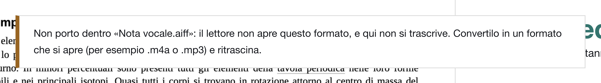
Un video che non si apre non serve a niente. Non lo puoi guardare e l'app non lo trascrive. Resterebbe nella tua cartella un file che non si apre mai.
L'app non usa un elenco di formati buoni e cattivi. Prova ad aprire proprio quel file. Così un file scritto male viene fermato e un file sano entra. ⚠️ Nel dubbio l'app lo fa entrare.
Il numero davanti al nome
Ogni documento riceve un numero di due cifre: 01 Sistema solare.pdf, 02 Scheda fotografata.pdf. Gli appunti e le mappe usano quel numero per indicare il documento. Per esempio pdf:01#p=7 vuol dire: documento 01, pagina 7.
Il numero nuovo è sempre il numero più alto dello zaino, più uno. Lo stesso file trascinato due volte diventa 03 e 04. L'app non sovrascrive mai un documento.
Il titolo che leggi nella sidebar è il nome del file, senza il numero e senza l'estensione. Il file 03 Dispensa_di-diritto.pdf si legge «Dispensa di diritto».
Rinominare un documento
Non c'è un comando «Rinomina» per un documento, per un video o per un audio. Il nome è quello del file. Dai al file il nome giusto prima di trascinarlo.
⚠️ Se rinomini il file a mano nella cartella, le evidenze e i ritagli di quel documento non lo ritrovano più.
Le immagini invece hanno una didascalia che puoi cambiare. Apri il menu della scheda e scegli «Rinomina la didascalia». Cambia l'etichetta, non il file.
La cartella dello zaino
Zaini/sistema-solare/
_zaino.md il titolo e la data
_lettura.json l'ultima pagina di ogni documento
_ascolto.json l'ultimo minuto di ogni video e audio
MATERIALI/
PDF/01 Sistema solare.pdf le copie dei documenti
Indici-PDF/… il testo di ogni pagina, serve alla lente
Video/… Audio/… le copie dei video e degli audio
APPUNTI/
Pianeti rocciosi.md un appunto
_evidenze.json le evidenze, le parole chiave e le postille
_versioni/ le copie di sicurezza degli appunti
CHAT/ le conversazioni con il tutor
MAPPE/Il sistema solare.json una mappa
ALBUM/ i ritagli e le immagini
Quando trascini un file, l'app ne fa una copia dentro lo zaino. Il file originale resta dov'era. Le cartelle APPUNTI, MAPPE e ALBUM contengono quello che scrivi tu. Il tutor AI non modifica questi file.
Scrivere appunti e disegnare mappe
Un appunto nuovo
Premi «+» nella barra degli appunti. Si apre una finestra con due domande.
- Scrivi il titolo dell'appunto.
- Scegli il documento in «Nasce dal documento». Se stai leggendo un documento, l'app lo sceglie già. Se l'appunto non riguarda un documento, scegli «PERSONALE».
- Premi Invio. L'appunto è creato e aperto. L'avviso dice «Appunto creato».


C'è anche una scorciatoia. Comincia a scrivere senza creare l'appunto. Alla quinta parola l'app ti chiede il titolo. Quello che hai scritto diventa il testo dell'appunto. ⚠️ Se annulli, l'appunto non viene salvato.
La tendina «QUADERNO ▾»

Portare nell'appunto una frase del documento
- Seleziona la frase nel documento.
- Premi «Appunta» nella barra della selezione.
- La frase entra nell'appunto aperto, con il rimando alla pagina.
La forma la scegli tu, con la riga degli otto stili:
- senza riquadro: la frase e, dopo, il rimando alla pagina;
- con riquadro: un riquadro colorato «Dal documento», con la frase dentro e il rimando sotto. I riquadri sono sette: Nota, Importante, Definizione, Esempio, Dubbio, Attenzione, Da fare.


⚠️ Se la frase è corta, fino a tre parole piene, l'app la evidenzia e la mette anche fra le parole chiave. Se non c'è un appunto aperto, «Appunta» te lo fa creare subito.
Portare dentro parole chiave, ritagli e immagini
- Una parola chiave nell'appunto: trascina il chip dentro l'appunto. Oppure premi il tasto destro sul chip e scegli «Negli appunti».
- Una parola chiave nella mappa: trascina il chip sulla mappa. Il nodo prende il colore dell'evidenza e il pallino della fonte.
- Un ritaglio nell'appunto: trascina la scheda dentro l'appunto. Oppure scegli «Metti nell'appunto aperto» nel menu della scheda.
- Un ritaglio nella mappa: scegli «Metti nella mappa». Nasce un nodo con l'immagine. Lo puoi ridimensionare dagli angoli.
- Un'immagine: come il ritaglio. Subito dopo una bolla ti chiede se vuoi tutta l'immagine oppure solo una parte.
- La pagina o il minuto: il pulsante 🔖 scrive il punto che stai guardando. Il pulsante 📎 ti fa scegliere un altro materiale.


Scrivere dentro l'anteprima
Premi ◫ oppure F9. Il blocco si divide in due. A sinistra c'è il testo con i segni del Markdown. A destra c'è l'appunto come si legge.
Anche nella parte destra puoi scrivere. Clicca un paragrafo, un titolo o un riquadro: quel pezzo torna a essere testo dentro un campo. Quando esci dal campo, l'appunto si aggiorna.

- ⌘+Invio chiude il campo e tiene quello che hai scritto.
- Invio da solo va a capo dentro il campo.
- Esc chiude il campo e annulla le modifiche.
- Se clicchi un altro pezzo, il campo aperto si chiude e tiene le modifiche.
- I rimandi e le immagini restano cliccabili: aprono il documento o l'album.
Il salvataggio
Non devi ricordarti di salvare.
- L'appunto si salva da solo 1,8 secondi dopo l'ultimo tasto. Fino ad allora un pallino nella barra dice «Modifiche non salvate».
- L'appunto si salva subito quando cambi appunto, chiudi l'editor, cambi zaino o vai su un'altra finestra.
- La mappa si salva da sola 1,2 secondi dopo ogni modifica, e sempre prima di chiuderla.
- ⌘S salva quando vuoi tu.
Il salvataggio automatico è comodo. Però potrebbe salvare la cosa sbagliata: basta un ⌘Z di troppo per svuotare l'appunto.
Prima protezione: il salvataggio automatico non scrive mai un appunto vuoto sopra un appunto pieno. Il file resta com'era. Se vuoi svuotare un appunto davvero, puoi farlo: quello è un gesto tuo.
Seconda protezione: quando un salvataggio accorcia un appunto, l'app mette da parte la versione di prima. Le copie stanno in APPUNTI/_versioni/, con la data e l'ora nel nome. L'app tiene le ultime dieci copie di ogni appunto.
⚠️ Le copie non hanno un pannello dentro l'app. Si aprono dal Finder, o da Esplora file su Windows.
L'appunto si riapre dove eri
L'app ricorda la riga in cui stavi scrivendo, per ogni appunto. Riapri l'appunto e l'app torna a quella riga, con un po' di testo sopra e sotto.
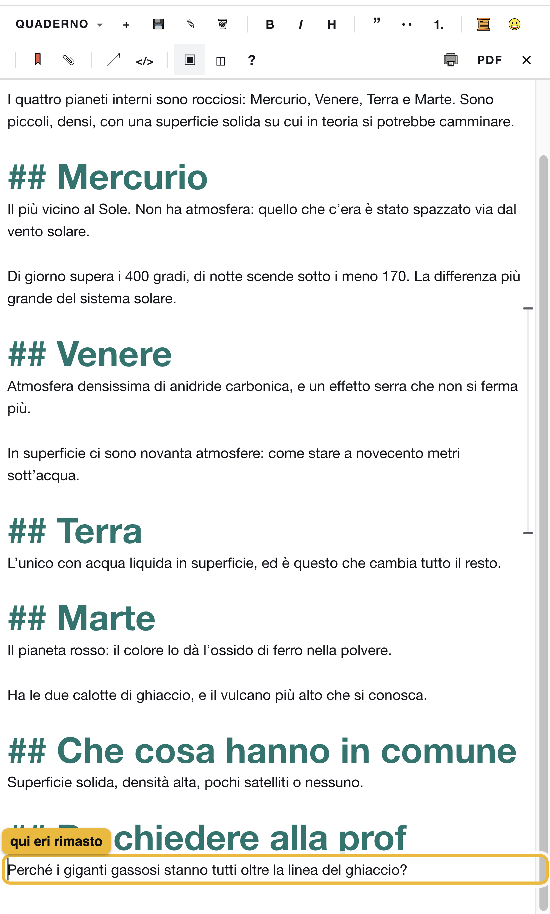
Guardare un rimando senza aprirlo
Ferma il mouse su un rimando, dentro l'anteprima dell'appunto. Dopo mezzo secondo compare una bolla con quello che c'è dall'altra parte. Non devi cliccare e non perdi il segno.
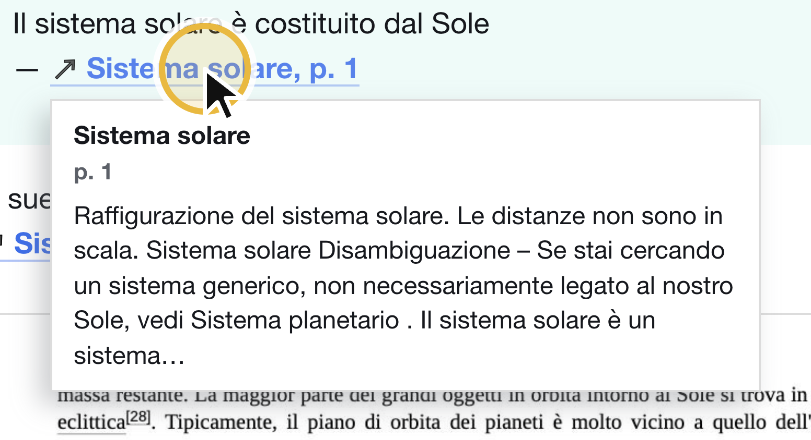
- Un rimando a una pagina mostra il titolo e le prime righe.
- Un rimando a un'evidenza mostra la frase con il suo colore, e la sua postilla se c'è.
- Un rimando a un minuto mostra il titolo del video e il tempo. Un rimando a un ritaglio mostra l'immagine.
⚠️ Se non c'è niente da mostrare, la bolla non compare. Esc la chiude.
Rinominare un appunto
Premi ✎ nella barra degli appunti. Si apre «Nuovo titolo dell'appunto». Sotto c'è la tendina «Nasce dal documento». È l'unico posto in cui puoi cambiare il documento di un appunto già creato.
⚠️ Se cambi il titolo, cambia anche il nome del file sul disco.

Una mappa nuova
- Nel blocco Mappa premi «+».
- Scrivi il titolo e conferma. La mappa nasce con un nodo solo: il titolo.
- Clicca un nodo per selezionarlo. Premi Tab per aggiungere un nodo figlio. Premi Invio per aggiungere un nodo accanto.
- La casella del testo si apre da sola. Scrivi e premi Invio.
- Un doppio click sullo spazio vuoto crea un nodo dove clicchi. Un doppio click su un nodo, oppure F2, lo rinomina.
- Per collegare due nodi, trascina dal cerchietto sul bordo del primo nodo fino al secondo nodo. Poi scrivi la parola del legame. Per esempio «causa» oppure «ha un».
- Trascina i nodi dove vuoi. ⌘Z annulla, fino a 20 passi indietro.


Rinominare una mappa
Premi ✎ nella barra della mappa. Si apre «Nuovo titolo della mappa», con la tendina «Nasce dal documento». Funziona come per gli appunti. Il titolo diventa anche il nome del file.

Riquadri, emoji e notazioni


Eliminare i materiali e le cose che hai scritto
Quando togli un documento dallo zaino, l'app lo manda nel Cestino del computer. Non lo cancella. Al suo posto lascia un piccolo segno: il numero del documento, il suo nome e la sua impronta.
A che cosa serve il segno? Se un giorno trascini di nuovo lo stesso documento, l'app lo riconosce. Gli ridà il numero di prima. Così gli appunti, le mappe, le parole chiave e i ritagli che lo citavano tornano a funzionare.
Come si toglie un documento
- Apri il documento nello strumento Fonti. ⚠️ Il cestino compare solo con un documento aperto.
- Premi 🗑 nella barra del documento, accanto alla «✕».
- Leggi la domanda. Dice quante cose usano quel documento: parole chiave, appunti, mappe, ritagli. Quelle cose restano dove sono.
- Conferma. Il file va nel Cestino. L'avviso dice che il documento è nel Cestino e che si riaggancia se lo reimporti.


Che cosa resta dopo
- Le parole chiave restano nel loro strumento. Se premi «Vai al documento», l'app dice che non riesce ad aprirlo. È normale: il file non c'è più.
- Gli appunti restano uguali. I rimandi restano scritti. Se li premi, il documento non si apre.
- I ritagli restano nel loro strumento. «Alla fonte» non trova più il documento.
- I nodi di mappa restano, con il loro pallino. Il pallino non trova più il documento.
- Il numero del documento resta occupato. Un documento nuovo prende il numero dopo.


Le altre cose che puoi eliminare
| Che cosa | Dove sta il comando | Dove finisce | Si riaggancia? |
|---|---|---|---|
| Documento | 🗑 nella barra del documento | Cestino del computer | Sì, se lo trascini di nuovo |
| Video o audio | 🗑 nella barra del Player | Cestino del computer | No |
| Immagine o ritaglio | menu della scheda → «Elimina…» | Cestino del computer | No |
| Appunto | 🗑 nella barra degli appunti | Cestino del computer | No |
| Mappa | 🗑 nella barra della mappa | Cestino del computer | No |
| Nodo di mappa | menu del nodo → «Elimina il nodo», oppure Canc | — | ⌘Z lo rimette |
| Evidenza o parola chiave | «Cancella evidenziatura» nella barra della selezione, oppure «Togli dall'elenco» nel menu del chip | — | No |
Anche i tuoi appunti passano dal Cestino
Tutto quello che elimini dallo zaino va nel Cestino del computer. Vale per i documenti e vale anche per gli appunti, le mappe, i ritagli e le immagini. Da lì puoi ripescarli.
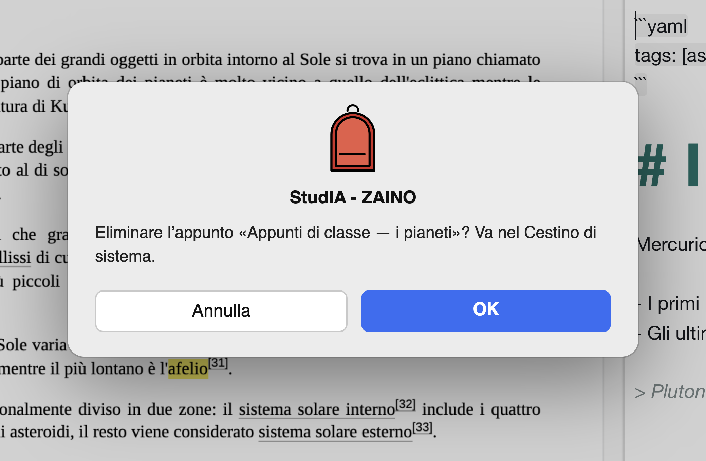
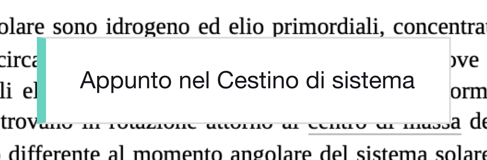
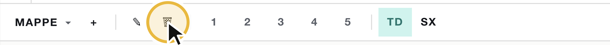
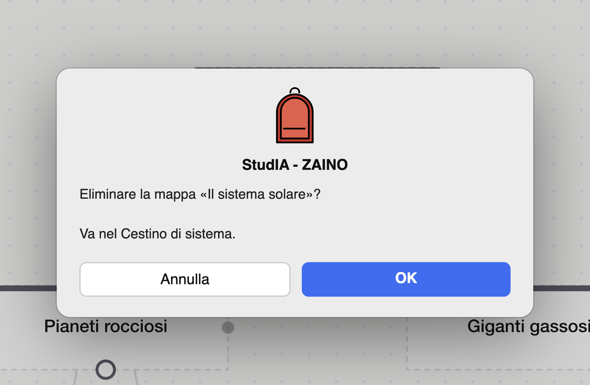
Dal Cestino torna il file: l'appunto, la mappa, l'immagine. Non torna il suo posto dentro l'app. Un appunto ripescato dal Cestino lo devi rimettere a mano nella cartella APPUNTI. Da lì l'app lo rivede.
Rinominare ed eliminare uno zaino
Gli zaini si governano da un posto solo: «⚙ Impostazioni», scheda «Zaino». Lì c'è l'elenco dei tuoi zaini. Accanto a ogni zaino ci sono due comandi: ✎ per rinominare e 🗑 per eliminare.
In cima alla stessa scheda c'è «📖 Apri la guida allo ZAINO». È questa guida. Si apre in una finestra a parte: puoi tenerla accanto all'app mentre provi i comandi.
Rinominare uno zaino
- Premi ✎ accanto allo zaino.
- Scrivi il nome nuovo.
- Premi Invio.
Cambia il titolo che leggi in tutta l'app. Cambia anche il nome della cartella sul disco. Tutto quello che c'è dentro resta al suo posto: documenti, video, appunti, mappe, ritagli. Se lo zaino era aperto, resta aperto.
Il nome nuovo deve essere libero, come alla creazione. Se il nome è già usato, l'app lo dice e non rinomina.
Se cambi solo le maiuscole o la punteggiatura, la cartella sul disco non si sposta. Cambia solo il titolo.

Eliminare uno zaino
- Premi ⚙ in alto a destra. Scegli la scheda «Zaino».
- Premi 🗑 accanto allo zaino da eliminare. ⚠️ Attenzione a non premere il ✎ che sta accanto.
- Leggi la domanda e conferma.
- Tutta la cartella dello zaino va nel Cestino del computer. Da lì la puoi ancora ripescare, ma l'app non la vede più.


Se elimini lo zaino aperto, l'app prima salva tutto e chiude bene i materiali.
Se invece sposti la cartella nel Cestino a mano, il computer fa la stessa cosa. Però nell'app resta la memoria del banco di quello zaino. Uno zaino nuovo con lo stesso nome la userebbe. Meglio eliminare dall'app.
Tasti rapidi
Le tabelle scrivono i tasti nelle due forme: quella del Mac e quella di Windows.
- Le combinazioni di tasti funzionano sempre, anche mentre scrivi.
- Le lettere sole del Player funzionano solo quando non stai scrivendo.
Non devi tradurre a mente. Ferma il mouse su un pulsante: l'app scrive ⌘F su un Mac e Ctrl+F su Windows.
In tutta l'app
| Che cosa fa | Mac | Windows | Dove funziona |
|---|---|---|---|
| Scrive il minuto del video negli appunti | ⌘⇧C | CtrlMaiuscC | sempre, anche mentre scrivi. Serve un video aperto. |
| Cerca dentro il documento aperto | ⌘F | CtrlF | quando stai leggendo il documento |
| Cerca in tutto lo zaino | ⌘F | CtrlF | negli altri casi, per esempio mentre scrivi un appunto |
| Cerca la frase esatta | le " attorno | le " attorno | in tutte e due le ricerche |
| Nella ricerca: risultato dopo, risultato prima | Invio · ⇧Invio | Invio · MaiuscInvio | nel campo di ricerca |
| Salva l'appunto | ⌘S | CtrlS | sempre. L'appunto si salva anche da solo. |
| Stampa l'appunto o la mappa | ⌘P | CtrlP | sempre |
| Mostra l'appunto come si legge | ⌘J | CtrlJ | negli appunti |
| Testo e lettura uno accanto all'altro | F9 | F9 | negli appunti |
| Ritaglia senza accendere le forbici | ⌘ + trascina | Ctrl + trascina | su un documento, un'immagine o un video |
| Zoom del documento o dell'immagine | ⇧ + rotella | Maiusc + rotella | sopra la pagina |
| Zoom della mappa | rotella | rotella | sopra la mappa |
| Volta pagina | ← → | ← → | quando stai leggendo il documento |
| Sposta la finestra sulla riga | ↑ ↓ | ↑ ↓ | solo con la fascia accesa. Da spenta le frecce scorrono la pagina. |
| Chiude una cosa alla volta: le forbici, il menu, la barra della selezione, la ricerca, il campo della pagina, la fascia sulla riga, quello che è aperto dentro la mappa | Esc | Esc | ⚠️ Esc non chiude il documento e non toglie la mappa dal blocco. Per quello c'è la «✕». |
| Conferma una finestra · annulla | Invio · Esc | Invio · Esc | in tutte le finestre con un campo |
Nel Player
| Che cosa fa | Mac e Windows | Dove funziona |
|---|---|---|
| Riproduci o metti in pausa | K oppure spazio | con un video aperto, quando non stai scrivendo |
| Indietro o avanti di 10 secondi | J · L | come sopra |
| Più lento o più veloce | < · > | come sopra |
| Indietro o avanti di 5 secondi | ← · → | dopo un click dentro il Player |
Negli appunti, con il cursore nel testo
| Che cosa fa | Mac | Windows |
|---|---|---|
| Grassetto · corsivo · collegamento | ⌘B · ⌘I · ⌘K | CtrlB · CtrlI · CtrlK |
| Titolo più piccolo · più grande | ⌘H · ⇧⌘H | CtrlH · CtrlMaiuscH |
| Citazione · elenco puntato · elenco di caselle | ⌘' · ⌘L · ⇧⌘L | Ctrl' · CtrlL · CtrlMaiuscL |
| Immagine · elenco numerato · blocco di codice | ⌘⌥I · ⌘⌥L · ⌘⌥C | CtrlAltI · CtrlAltL · CtrlAltC |
| Continua l'elenco · rientra · togli il rientro | Invio · Tab · ⇧Tab | Invio · Tab · MaiuscTab |
Nella mappa, con il cursore fuori dai campi di testo
| Che cosa fa | Mac | Windows | Serve |
|---|---|---|---|
| Aggiungi un nodo figlio · un nodo accanto | Tab · Invio | Tab · Invio | un nodo selezionato |
| Rinomina il nodo | F2, o doppio click | F2, o doppio click | un nodo selezionato |
| Elimina il nodo | Canc | Canc | un nodo selezionato |
| Annulla, fino a 20 passi indietro | ⌘Z | CtrlZ | — |
| Conferma o annulla la casella del testo | Invio · Esc | Invio · Esc | casella aperta |
| Nuovo nodo dove clicchi · parola del legame | doppio click sullo spazio vuoto · doppio click sul legame | — | |
Non c'è un tasto per cambiare zaino, per nascondere la sidebar, per cambiare la forma del banco, per cambiare lo strumento di un blocco, per il tema e per la misura del testo. Questi comandi stanno nella barra in alto.
Dentro l'app non c'è una schermata con tutte le scorciatoie. Questa tabella è quella.
I documenti PDF: quali entrano e come si leggono
Un PDF con testo contiene le parole scritte. Il computer le può leggere, selezionare e cercare. Sono i PDF fatti con Word, con i siti e con i libri digitali.
Un PDF fatto di fotografie contiene solo immagini di fogli. Per il computer non c'è nessun testo da selezionare. Sono le scansioni e le foto scattate con il telefono.
L'app capisce da sola di che tipo è il documento. Per i documenti fotografati propone di riconoscere il testo.
I documenti con testo
Appena il documento entra, l'app legge il testo di ogni pagina e lo salva in un indice. L'indice serve alla lente per cercare. L'indice non si vede. La lettura è veloce: 266 pagine in meno di un secondo.
Da subito puoi selezionare il testo, evidenziarlo, appuntarlo, ritagliarlo e cercarlo.
I documenti fotografati: riconoscere il testo
Se più della metà delle pagine non ha testo, per l'app il documento è fotografato. Alla fine dell'importazione l'app ti chiede se deve riconoscere il testo.
Puoi rispondere di no. Il comando resta nella barra del documento: è il pulsante «Aa↗». Quel pulsante compare solo sui documenti fotografati.


- Premi «Aa↗», oppure rispondi «OK» alla proposta.
- Segui gli avvisi in basso. Dicono a che pagina è arrivata l'app.
- Alla fine l'avviso dice che il testo si può selezionare, evidenziare e cercare. Il documento si riapre alla stessa pagina.
- Da adesso il documento si comporta come un documento con testo. Il pulsante «Aa↗» sparisce.


Che cosa fa l'app, per chi vuole saperlo
- Il riconoscimento lavora dentro l'app, in italiano e in inglese. Non devi installare niente e non serve internet.
- L'app scrive un testo invisibile sopra le immagini. Lo scrive nella copia del documento che sta nello zaino. Il tuo file originale non viene toccato.
- Le righe storte fino a 10 gradi vengono lette lo stesso. L'app rilegge la pagina raddrizzata e tiene la lettura migliore.
- Il tempo misurato è di circa 1,7 secondi per pagina su un Mac con chip Apple. La memoria usata non cresce con il numero delle pagine.
- ⚠️ Il testo riconosciuto non si vede e non si corregge. Serve a selezionare, evidenziare e cercare. Qualche parola può risultare letta male.
Casi particolari
| Caso | Che cosa succede |
|---|---|
| Il PDF è protetto da password | Entra nello zaino ma non si apre. Togli la password con un altro programma, poi trascinalo di nuovo. |
| Il file non è un PDF, ma il suo nome finisce in .pdf | Entra nello zaino ma non si apre. |
| Il PDF è misto: poche pagine fotografate e molte pagine con testo | L'app non propone il riconoscimento e il pulsante «Aa↗» non compare. Le pagine fotografate restano immagini. |
| Il PDF ha caratteri strani che escono come simboli | Se ogni pagina ha più di 200 caratteri, l'app lo considera un documento con testo. La lente cerca sul testo sbagliato. |
| Il PDF è molto grande: centinaia di pagine | Non c'è un limite. L'app lavora una pagina alla volta. |
| Vuoi scrivere dentro il PDF | Non si può. L'app non scrive nel documento. Le evidenze e i ritagli stanno in file a parte. Il documento resta pulito. |
| Vuoi aprire più documenti in linguette | Le linguette non ci sono. Puoi aprire due documenti in due blocchi. |
Che cosa non c'è, e il glossario
Questo elenco serve a non farti cercare quello che non esiste.
- Rinominare un documento, un video o un audio dall'app. Non si può. Dai al file il nome giusto prima di trascinarlo.
- Un pulsante «Importa». Non c'è. I file si trascinano sulla finestra.
- Salvare la mappa come immagine PNG o SVG. Non si può. Puoi stampare la mappa e salvarla in PDF.
- La trascrizione dei video e degli audio. L'app non la fa. I video si guardano e si citano al minuto. Per questo un video che non si apre non entra nello zaino.
- Un pannello per le versioni degli appunti. Non c'è. Le copie di sicurezza stanno in
APPUNTI/_versioni/. Si aprono dal Finder, o da Esplora file su Windows. - Su Windows. L'installer si scarica dalle Releases su GitHub. Non è firmato: alla prima apertura Windows avvisa. Scegli «Ulteriori informazioni» e poi «Esegui comunque». ⚠️ L'app non è ancora stata provata su una macchina Windows. Le immagini di questa guida vengono da un Mac. Su Windows i pulsanti stanno negli stessi posti.
Queste parole hanno un significato solo, in tutta la guida.
- Zaino: la cartella con i tuoi materiali.
- Materiale: un documento, un video, un audio, un'immagine o un testo dentro lo zaino.
- Fonte: il materiale da cui viene un'evidenza, un ritaglio o un nodo. I menu dell'app dicono «Alla fonte» e «Vai alla fonte».
- Documento: un file PDF dentro lo zaino.
- Banco: lo spazio di lavoro al centro della finestra.
- Blocco: una parte del banco.
- Strumento: quello che metti dentro un blocco. Gli strumenti sono otto: Fonti, Player, Appunti, Mappa, Parole chiave, Ritagli, Album Foto, Postille.
- Barra: la riga di comandi in cima a un blocco.
- Avviso: il messaggio che compare in basso per qualche secondo.
- Appunto: un file di testo che scrivi tu.
- Mappa: il disegno fatto di nodi e di legami.
- Nodo: una casella della mappa.
- Evidenza: un pezzo di testo che hai colorato.
- Parola chiave: un'evidenza corta, fino a tre parole piene.
- Chip: la piccola etichetta colorata di una parola chiave. Si può trascinare.
- Scheda: il riquadro di un ritaglio o di un'immagine, con la sua didascalia.
- Postilla: il motivo per cui hai evidenziato una frase, scritto da te.
- Ritaglio: un pezzo di pagina, di immagine o di video che hai ritagliato.
- Rimando: l'indirizzo di un punto preciso di un materiale, per esempio
pdf:01#p=7. - PERSONALE: un appunto o una mappa che non appartiene a nessun documento.